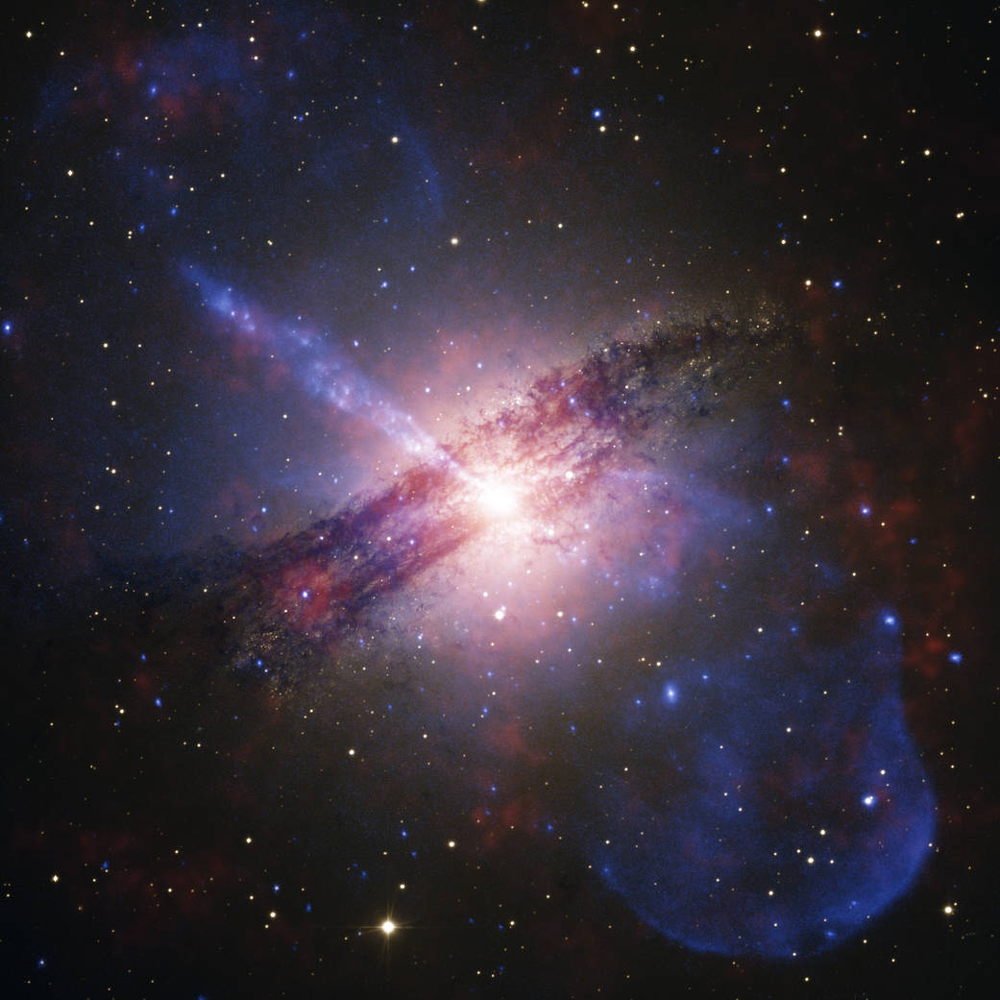

The Chandra X-ray Observatory, often referred to simply as Chandra, is a pivotal space observatory that allows scientists to obtain X-ray images of exotic environments to help understand the structure and evolution of the universe. Launched in 1999, Chandra is a part of NASA's fleet of "Great Observatories" alongside the Hubble Space Telescope, the Spitzer Space Telescope, and the now-decommissioned Compton Gamma Ray Observatory.
Unlike optical telescopes that capture visible light, Chandra is specifically designed to detect X-ray emission from extremely hot regions of the universe, such as the remnants of exploded stars, clusters of galaxies, and matter around black holes. Because Earth's atmosphere absorbs X-rays, Chandra orbits above it, at an altitude up to 139,000 kilometers, offering an unobstructed view of the X-ray universe.
The development and deployment of the Chandra X-ray Observatory represented a significant investment in astrophysics by NASA. With a cost of over $4.2 billion, Chandra has been instrumental in reshaping our understanding of the hot and energetic universe. Its high-resolution images have provided insights into the mysteries of dark matter, the nature of black holes, and the lifecycle of stars. As Chandra continues its mission, it remains a testament to human innovation and our insatiable curiosity about the universe's vast complexities.
 Next